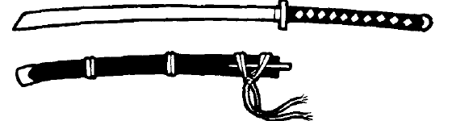
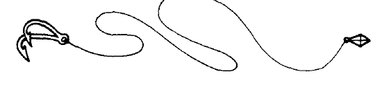
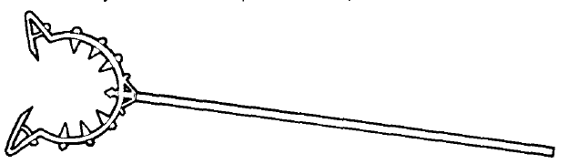
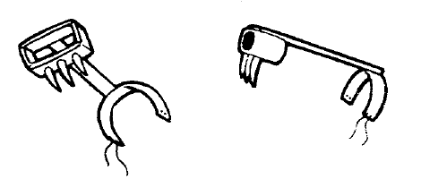
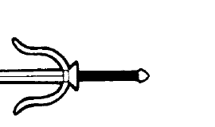
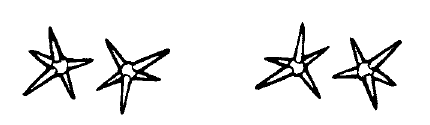
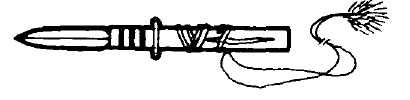

武器说明（续）
军扇（Gunsen）：军扇是铁制或作战用的扇子。主要用于防御，可视为小型盾牌；也可以用来击打。它通常仍被视为应急武器。
十手（Jitte）：十手主要是防御武器，是一根逐渐变细的铁棒，握柄附近有一枚短钩。它没有锋刃，可用于格挡攻击和钩住武器，也能用来击打。
jo 棍：jo 棍是较短的 bo 棍，由相同木材制成。可单手使用，也常成对使用。
镰（Kama）：镰是一种直刃镰刀，是农具，也能成为非常有效的武器。忍者倾向使用它，因为携带时不容易引起怀疑。

武士刀（Katana）：武士刀是单刃、略弯的剑，末端呈凿形。它由普通剑逐渐演变而来，以精良的结构和设计著称，或许是制作最精良的剑种之一。制作武士刀极为讲究，其锻造与构造被视为珍贵技艺。剑匠必须长时间劳作，才能使刀刃达到恰当的回火状态。制作正确时，刀刃轻盈、平衡良好，兼具强度、柔韧性与弹性。金属品质和锻造工艺使刀刃能够磨得锋利如剃刀。此外，刀身常以蚀刻图案、祈祷文或家族谱系精美装饰；刀柄、护手与刀鞘也同样受到重视。武士刀常有各自的名字，纪念它曾参与的荣耀事迹。
对武士角色而言，武士刀不只是一把剑，也是他本人及家族荣誉的一部分。它是其私人武器，不可交由他人使用。触碰收刀状态下的武士刀刀鞘，就是对武士的侮辱；未经允许拔刀同样是侮辱。一把武士刀可能在同一家族中传承数代，成为珍贵传家宝。失去这样的武器是可耻的污名，只有取回武器并惩罚夺走它的人，才能洗刷耻辱。许多武士为取回家族武器而献出生命。
武士刀的价值因工艺品质和武器历史而有很大差异。装备表所列价格是一把普通武士刀的价格；其他武士刀的价格会因品质与工艺美术水平而高低不同。
链节鞭（Kau sin ke）：又称“鞭链”，由四至六根短铁棒以数段链环连接而成，源自农用连枷。使用得当时，它是致命武器；铁棒能够绕过盾牌，造成沉重打击。

绳钩（Kawanaga）：绳钩兼具工具与武器用途，是一段一端装抓钩、另一端带重物的绳索。可用于攀爬，也可挥动抓钩或重物攻击对手；绳索还可用来缠绕对手。它用途多且容易藏匿，因此很受忍者欢迎。
烟管（Kiseru）：烟管是金属制烟斗。无害的外观掩盖了它作为击打武器的用途。它便宜、容易制作，又不像危险武器，因此农民和僧侣喜欢使用；也可以用来吸烟。
攀爬耙（Kumade）：攀爬耙是兼具两种用途的工具：一根长木杆，一端装有耙头。把耙齿卡入裂缝、凸缘或窗台，再沿木杆攀爬即可登高；它也可用作武器。由于用途多且携带时不易引起怀疑，忍者常使用它。
镰锁（Kusari-gama）：镰锁是在普通镰刀基础上发展出的战斗武器，是一把镰刀加上一段加重链，链条连接在柄尾。它可以用多种方式使用：手持镰刀攻击，以加重链击打或缠绕，也可以让链端的镰刀旋转攻击。它相对容易制作，农民和忍者都喜欢使用。
双刃绳（原文标题：Kyoketsuogi；表中作 Kyoketsu-shogi）：这是一段绳索，一端带锋利的钩刃，另一端带沉重铁环。用途与普通链类武器十分相似：可挥动刀刃或重物攻击，可甩到对手脚或手臂上缠绕，可像流星锤一样投出，也可握住绳子用刀刃攻击。绳索比链条更容易被割断或折断，但忍者仍常用它，因为使用时几乎无声。它容易藏匿，常当作腰带或藏在腰带下面佩戴。
薙杖（Lajatang）：这种罕见而特殊的武器，通常由精通其用法的武术家使用。它由一根三至五英尺长的杆组成，两端各装一把新月形刀刃；有些款式还在新月外缘向下伸出较小的倒刺。使用时双手握持，方式类似长杖。
套索（Lasso）：按游戏规则，套索不造成伤害。命中表示套索已套住受害者（体型为人类或更小），目标随即被缠住。若目标智力高于 2，且有办法割断绳索，则可进行对抗毒素的豁免检定；成功即表示脱困。没有骑术熟练项的骑乘角色会自动落马；拥有该熟练项的角色必须按熟练项评级检定。双足步行生物若体重不超过套索使用者的一半，有 25% 的几率被拉倒。多只生物合力拉绳会提高此几率（每多一只拉绳生物提高 20%），反之亦然。套索可承受 2 点切割伤害；角色也可在成功通过弯折铁栏检定后凭力量扯断套索。每名角色只能尝试一次。

捕人叉（Man catcher）：捕人叉是一种双叉长柄武器，每根叉齿都弯曲成环，可圈住人类体型的生物。体型比人类大或小至少 50% 的生物不受此武器影响。叉上带刺并有锋利边缘，既能伤害对手，也能阻止其使用手臂。被捕者失去所有盾牌与敏捷加值；此外，使用者可以推拉被捕者，这种推拉每轮自动造成 1–2 点伤害。被捕者有 25% 的几率被拉倒，跪倒或俯卧。被捕者成功通过弯折铁栏检定即可挣脱；可以反复尝试，但除非戴着厚手套或护手，否则每次尝试都会受到 1–4 点伤害。其他角色可以砍断长柄救人，需要造成 6 点切割伤害。
常见战术是先捕住对手，再将其从地面或马背上猛地拽下，并压低长柄，把其颈部钉在地上。在这种姿势下，被捕者几乎毫无反抗能力。
烟粉（Metsubishi）：这是一种小型木制器具，用于把一口粉末吹到对手脸上。一端有吹嘴，中间是装粉末的腔室，另一端有一根小管。用力向吹嘴吹气，会把粉末从小管喷出，可能直接吹到对手脸上。烟粉本身不造成伤害，但可把刺激性或致盲粉末吹向目标。最常见的粉末是胡椒、灰烬和尘土。若攻击命中，目标必须进行对抗毒素的豁免检定；失败则失能 1–6 轮。忍者常用它分散注意力后脱身，城市守卫在试图抓捕罪犯时也会使用。
骑手长刀（Nagimaki）：这是缩短版的薙刀，由骑手使用。
薙刀（Naginata）：薙刀是一种轻而坚固的长柄刀。杆长六至八英尺，末端装有弯曲的剑形刀刃，可作为普通长柄武器使用。女性常首选薙刀。
针（Needle）：针算不上有效武器，但忍者有时会携带针，用于分散注意力或出其不意。针藏在口中，通过吐出或吹出（把舌头当作吹管）发射。口中最多可藏 20 根针。针可逐根或一次全部射出。逐根发射时，每根针都要分别进行普通命中检定；命中则造成 1 点伤害。一次齐射时，掷骰决定伤害，骰子面数等于发射的针数。因此，若 20 根针一次全部射出，就掷 1d20 决定伤害。显然，由于针是含在口中携带的，不能涂毒。此外，针的射程很差，几乎不能有效对付任何护甲。不过，它是隐藏武器，具有出其不意和分散注意力的优势。针通常不被视为很有荣誉的武器。

忍者爪（Nekode）：这是另一种双用途忍者工具，是一副掌心装有尖刺的绑带或手套。主要用途是辅助攀爬：把尖刺楔入裂缝以获得更牢固的抓握。如此使用时，忍者爪使攀爬成功几率提高 5%。它也可用来抓伤对手，造成少量伤害。戴着忍者爪时，角色仍可不受惩罚地使用其他物品。它们通常只在需要时佩戴，因为会轻易暴露使用者是忍者。
忍者刀（Ninja-to）：这是忍者的标准佩剑，长度约等于短剑，因此更容易藏在身上。与武士刀不同，它的刀刃笔直，品质较差。然而，依照忍者的行事方式，剑和刀鞘都有多种用途，因忍者而异。有些刀柄或刀鞘尖端设有暗格，可携带粉末、毒药或匕首。刀鞘通常比剑身更长，且两端开口，可当作吹管或呼吸管。刀鞘上可缠绕结实的丝绳，解开后用于攀爬。刀鞘通常坚硬结实，可用作梯子的横档。地下城主允许时，也可在这种武器上附加或藏入其他装置。
双节棍（Nunchaku）：这是一种源自普通农用连枷的武术武器，由两段硬木或铁制棍以短链或绳连接。可用于招架攻击、击打对手或钩住武器。它容易藏匿。要有效使用，必须接受武术训练。
帕朗刀（Parang）：帕朗刀兼具工具与武器用途，常见于原始部族成员手中，他们用它处理各种事务，几乎从不离身。帕朗刀是一种刀刃沉重的砍刀，能够以极大力量劈砍。
弹丸弓（Pellet bow）：这种武器的构造和用法几乎与普通弓相同，但弓弦上装有一个小弹兜，用来发射小石子或黏土、铅制弹丸，而不是普通箭。其射击方式不同于普通弓；弹丸发射时的力量比投石索更大。

叉棍（Sai）：叉棍又称 tjabang，是一种与十手几乎相同的武术武器，使用方式也相同。两者唯一差异在于，叉棍有两根侧向突出的叉齿，而十手只有一根。
三股钩（Sang kauw）：这是一种有两种形式的武术武器。基本形式是双头长矛，中部有环状握柄，并从握柄处伸出匕首或新月形刀刃；单手使用，可用于招架与攻击。另一种形式外观相同，但中部装有小圆盾，匕首刀刃从盾中央伸出。使用第二种形式时，角色视为使用小型盾牌（用于计算护甲等级）。两种形式都需要大量训练才能有效使用。
shaken：shaken 与手里剑相似（见下文），使用方式也相同。
杖中藏矛（Shakuijo yari）：这是一支藏在鞘中的长矛，外观看起来像一根手杖。矛鞘套上时，可当作 bo 棍使用。角色执行秘密任务或想装作没有防备时，通常会携带它。
机关杖（Shikomi-zue）：这是忍者常用的武器，外观看起来是一根约 6 英尺长的竹杖或木杖。然而，快速一拧或按下按钮，一端就会弹出矛头。因此，机关杖既可当作 bo 棍使用，也可当作长矛使用，造成相应武器的伤害。机关杖还可制成能藏匿其他武器的样式，例如链、钩、手榴弹等。
手里剑（Shuriken）：手里剑是一种小型投掷武器，形状和尺寸很多，最常见的是星形和尖刺形。星形手里剑有三个或更多剃刀般锋利的尖角，确保投出时至少有一个尖角会击中目标；尺寸不一（此处分为大型与小型）。尖刺形手里剑是逐渐变尖的大型针状物。两种手里剑都用手投掷，射程有限。它们容易藏匿，可藏在衣褶或腰带里，尖刺形甚至可以藏在头发中。
双叉（Siangkam）：这种武器看起来几乎毫无用处，只有受过相应武术流派训练的角色才能有效使用。双叉看起来像一支金属杆箭，尾羽的位置换成了小木柄。通常成对使用，每只手各持一支。双叉可用于戳刺、突刺、劈砍和招架。尽管外形像箭，却无法有效投掷。
袖缠（Sode garami）：袖缠又称“缠袖器”，是一种高度专门化的武器，用于捕捉并缠住对手而不造成严重伤害。它通常由长杆和横杆构成，上面装有大量尖刺与钩。命中后，它会钩住并抓牢对手的衣服；对手可以进行对抗麻痹的豁免检定以脱身。若失败，则视为被缠住。专门用于捕捉对手时，袖缠不造成伤害；但也可以用它猛烈击打，仍能产生相同的缠住效果，并造成表列伤害。宫廷卫兵和城市守卫常携带这种武器。

铁菱（Tetsu-bishi）：铁菱是小型蒺藜，不是近战或投掷武器。它是带刺的球体或四面菱形，无论落地朝向如何，至少总有一根尖刺朝上。它用于让地面变得极其危险，以阻止或减慢人和动物的移动。由于其结构特点，无法有效投向对手；追击时应将其撒在对手脚下。忍者非常喜欢铁菱，因为它能帮助他们迅速摆脱追捕。
铁棒（Tetsubo）：铁棒又称包铁棍，是钉头锤的长柄武器版本。它是一根长木棍，需双手挥舞，上半部包覆带钉铁条。旅行者常用它，因为也可充当手杖。
三节棍（Three-piece rod）：这是一种由农用连枷演变而来的武术武器，由三段各长 2–3 英尺的硬木棍组成，以短链相连。受过训练的人可用它击打对手、格挡攻击、钩住或打落武器；未受训练的人几乎无法有效使用。
拐（Tui-fa）：又称 tonfa，是一根硬木棍，侧面偏离中央处伸出一根小握柄，全长约 2–3 英尺。它原本是磨盘的手柄，如今成为武术武器。受过训练的战士可用它格挡、钩住武器、打断武器并有效攻击。在禁止使用普通武器的地区，人们常使用拐。

小标枪（Uchi-ne）：这是一种短而沉重的标枪，外形像迷你箭。可在短距离有效投掷，也可用于突刺和戳击。贵族旅行时常携带它。
胁差（Wakizashi）：这是一把短剑，设计和构造与武士刀相似。胁差也可能以过去的功绩或事件命名。它在武士荣誉中的地位几乎与武士刀同等。作为配对武器时，所有关于武士刀及其保养的规则与指引也适用于胁差。
武士角色通常将胁差与武士刀成对佩戴，称为 daisho，即“长与短”。事实上，在卡拉图许多地区，这两件武器是武士身份的标志。只有武士角色可以同时佩戴二者；其他人若违抗此法，可能因僭越无权拥有的身份而被逮捕，甚至立即处决。
鞭（Whip）：要造成伤害，鞭必须击中裸露或仅被薄衣覆盖的皮肤。厚衣物、浓密毛发或皮毛可提供相当保护，直到反复抽打将其撕开。厚皮（例如大象或犀牛的皮）最多只会感到轻微刺痛，不会受到实质伤害。重鳞甲或其他防护严密的对手甚至感觉不到鞭击，即使鞭梢带重物也一样。不过，鞭也可用于缠住对手，这种用法通常比直接造成伤害更有效。